Download Raspberry Pi Imager
Open the official Raspberry Pi software download page and download the Raspberry Pi Imager for your OS:
https://www.raspberrypi.com/software/
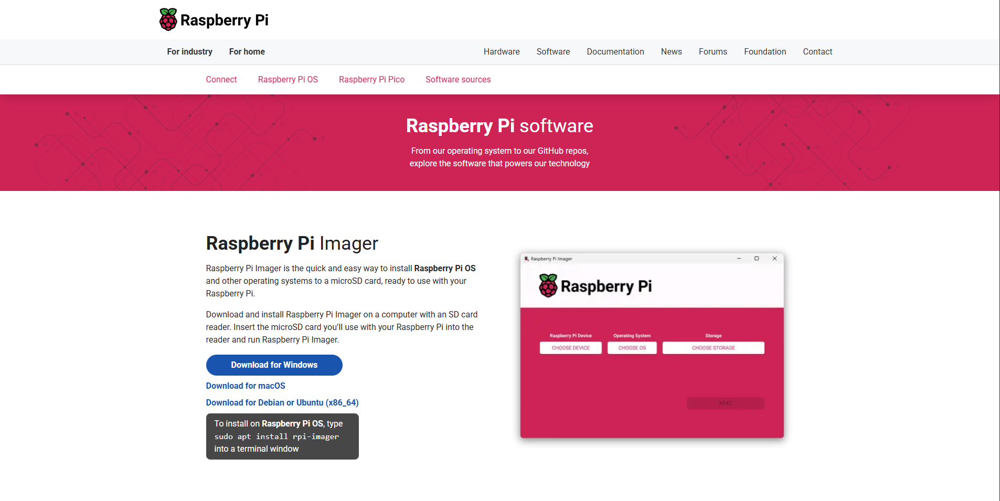
Step-by-step: Flash OS using Raspberry Pi Imager
⚠️ Crucial: The imaging step will erase the selected SD card. If you select the wrong drive, you may lose data and must start the process again. Double-check the target drive before writing.
- Run Raspberry Pi Imager you downloaded from the link above. You'll see three main buttons: CHOOSE DEVICE, CHOOSE OS, and CHOOSE STORAGE.
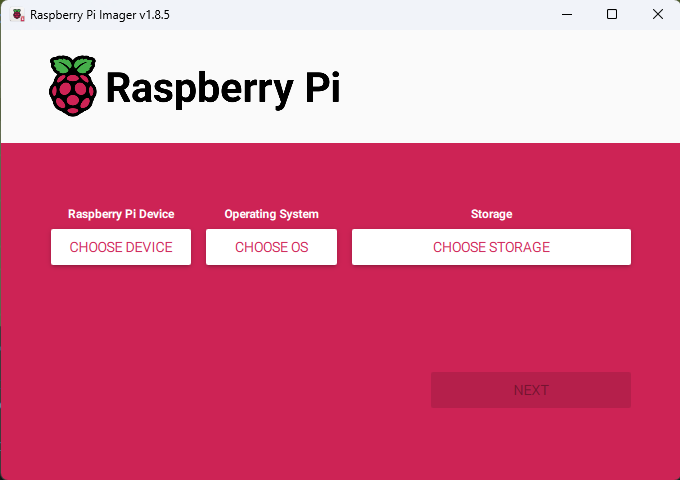
Raspberry Pi Imager - Initial Screen
- Click CHOOSE DEVICE → select RASPBERRY PI 4 from the list.
- Click CHOOSE OS → select RASPBERRY PI OS (64-BIT).
- Click CHOOSE STORAGE → select your MicroSD card. Make sure the size and label match the card you intend to flash.
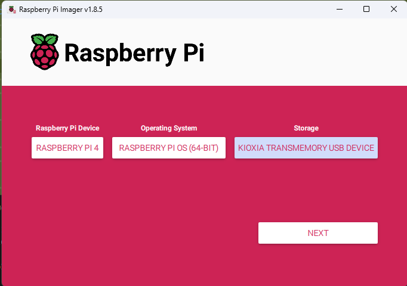
- After selecting all three options, the NEXT button will become active. Click NEXT.
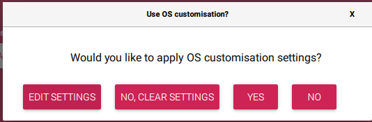
- A dialog will appear asking "Would you like to apply OS customisation settings?" Click EDIT SETTINGS to configure:
- GENERAL tab: ⚠️ Crucial: This step requires you to carefully input the correct details for raspberry pi. If you made any mistake with the input and you are unable to login to raspberry pi, you will need to redo the entire formatting again with proper input.
- Set hostname: Enter any name here but make sure to note this name down. Best to give a simple name.
- Set username and password: Choose your username and password (Again give an easy name and password and note it down somewhere).
- Configure wireless LAN: Enter your Wi-Fi SSID (network name) and password. Select your Wireless LAN country (e.g., "IN" for India)
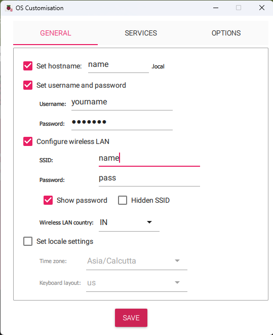GENERAL Tab - Hostname, Username, and WiFi Configuration
- SERVICES tab:
- Enable SSH
- Select "Use password authentication" (recommended for beginners)
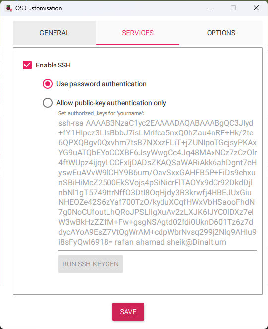 - OPTIONS tab: You can ignore this
- GENERAL tab:
- Click SAVE at the bottom of the OS Customisation window.
- You'll return to the confirmation dialog. Click YES to apply the settings.
- Review settings carefully. When ready, click Write to start imaging. Warning: This will erase all data on the selected storage device! Wait until the process completes and shows success.
- When finished, safely eject/remove the SD card from your computer and insert it into the Raspberry Pi's SD card slot.
- Power up the Raspberry Pi by connecting the power supply. Wait approximately 5 minutes for first-boot tasks to complete (OS expansion, network connection, and service initialization). The Pi will automatically connect to your Wi-Fi network. While waiting, continue with VNC setup below.
VNC: Remote Desktop Access (RealVNC)
VNC allows you to access the Raspberry Pi's desktop remotely from your computer. We'll use RealVNC Viewer for this.
Download RealVNC Viewer
Download RealVNC Viewer for Windows from the official website:
https://www.realvnc.com/en/connect/download/vnc/
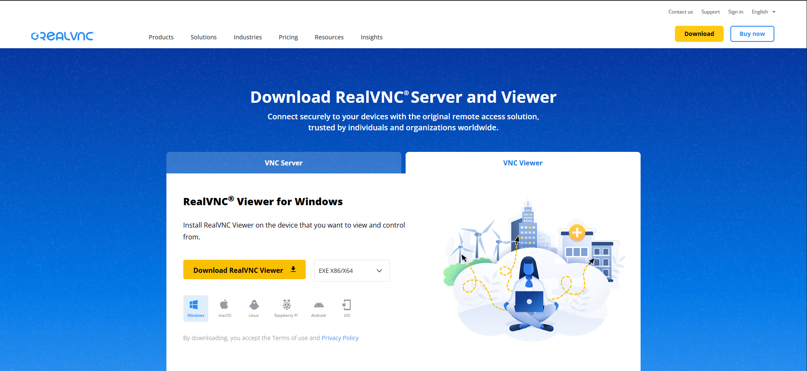
RealVNC Download Page
Install RealVNC Viewer
- Run the downloaded RealVNC Viewer installer
- Follow the installation wizard and accept the license agreement
- Complete the installation and launch RealVNC Viewer
Create New VNC Connection
- Open RealVNC"
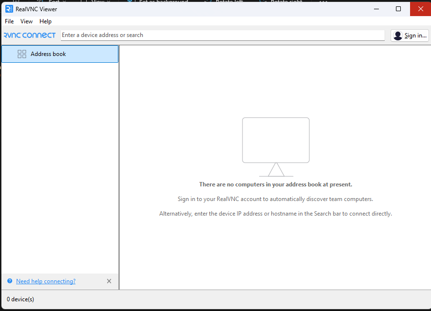
- Click on File menu at the top → select New connection... (or press
Ctrl+N)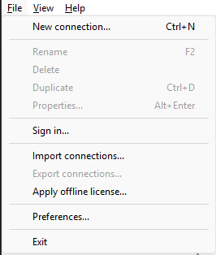 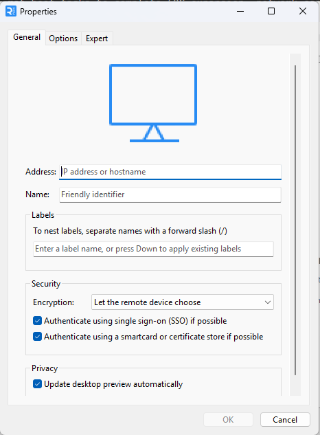 - A Properties dialog will appear. Fill in the connection details:
- Address: Enter the hostname you set in Raspberry Pi Imager (e.g.,
name.localor the Pi's IP address like192.168.1.123) - Name: Give it a friendly identifier (e.g., "My Raspberry Pi" or "Pi 4")
- Labels: Optional - you can add labels to organize multiple connections
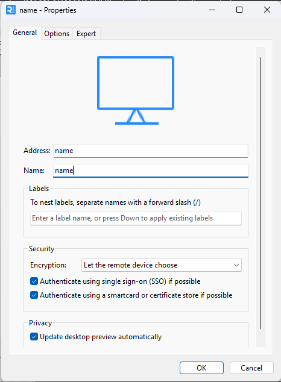Important: The address must match exactly what you entered in the Raspberry Pi Imager settings:- If you set hostname as "raspberrypi", use:
raspberrypi.local - If you set hostname as "mypi", use:
mypi.local - Or use the IP address if you know it:
192.168.x.x
- Address: Enter the hostname you set in Raspberry Pi Imager (e.g.,
- Click OK to save the connection. It will now appear in your Address book.
- To connect: Double-click the saved connection in the Address book. You'll be prompted for:
- Username: The username you set in Raspberry Pi Imager
- Password: The password you set in Raspberry Pi Imager
We will now move onto SSH so we can connect our RealVNC to Raspberry Pi